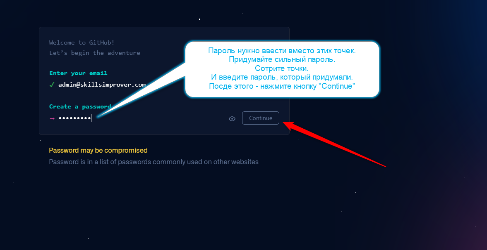

...А на следующем шаге произойдет магия!
Станица не сменилась — она просто расширилась и предлагает ввести пароль:

Этот шаг еще более важный, чем предыдущий, где мы придумывали себе email. Ведь пароль — это:
БЕЗОПАСТНОСТЬ НАШЕГО АККАУНТА!
Но мы не будем делать этот шаг слишком длинным.
Я не безопастник, друзья, и вряд ли смогу посоветовать вам что-то полезное здесь.
Просто:
- Придумайте себе сложный пароль.
-
Если вашей фантазии хватает только на
super_secret_1983,
то воспользуйтесь одним из
генераторов паролей.
- Запомните пароль, который придумали.
-
Если с запоминанием беда,
воспользуйтесь одним из
менеджеров паролей.
-
После чего введите ваш пароль в поле
Create a password
и нажмите кнопку Continue.
Что произойдет после этого, мы увидим на следующем шаге.
Это уже можно не читать (потому что тогда шаг, блин, станет большим),
но я не удержусь, и расскажу анекдот про придумывание надежных паролей
 .
.
Офис. Open Space.
Сидят сотрудники и с удивлением наблюдают, как их коллега со всей силы обеими руками херачит по клавиатуре.
Наконец, один не выдерживает и спрашивает — Что ты делаешь?
Надежные уникальные пароли генерирую
— отвечает коллега.